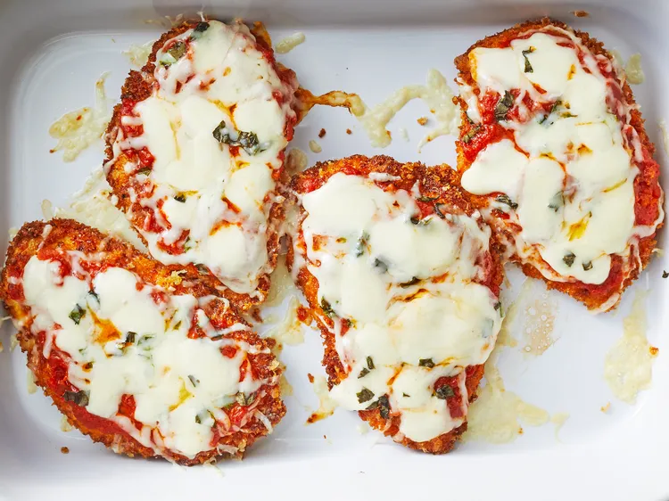
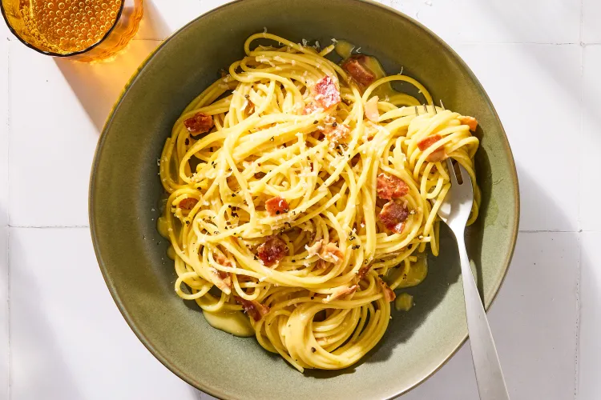
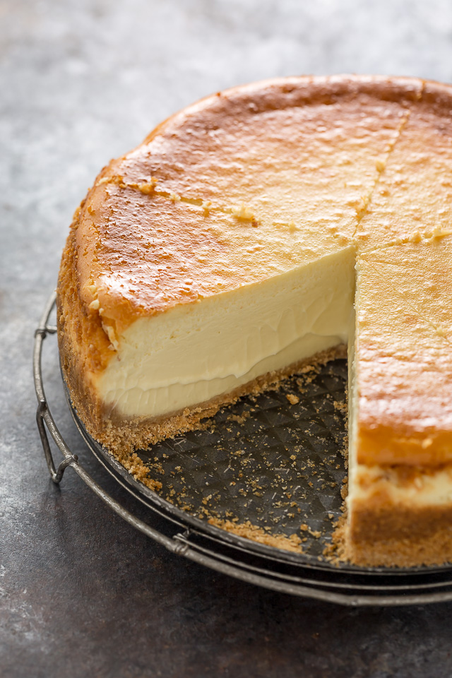

My Favorite Recipes
Chicken Parmesan
Total Time
45 mins
Servings
4
Author
John Mitzewich

INGREDIENTS
- 4 skinless, boneless chicken breast halves
- salt and freshly ground black pepper to taste
- 2 large eggs
- 1 cup panko bread crumbs, or more as needed
- ¾ cup freshly grated Parmesan cheese, divided
- 2 tablespoons all-purpose flour, or more if needed
- ½ cup olive oil for frying, or as needed
- ½ cup prepared tomato sauce
- ¼ cup fresh mozzarella, cut into small cubes
- ¼ cup chopped fresh basil
- ½ cup freshly grated provolone cheese
- 2 teaspoons olive oil
DIRECTIONS
-
Gather the ingredients.
Preheat the oven to 450 degrees F (230 degrees C).
-
Place chicken breasts between two sheets of heavy plastic (resealable freezer bags work well) on a solid, level surface.
Firmly pound chicken with the smooth side of a meat mallet to a thickness of 1/2-inch.
-
Season chicken thoroughly with salt and pepper.
Using a sifter or strainer, sprinkle flour over chicken breasts, evenly coating both sides.
-
Beat eggs in a shallow bowl and set aside. Mix bread crumbs and 1/2 cup Parmesan cheese in a separate bowl, set aside.
Dip a flour-coated chicken breast in beaten eggs.
Transfer breast to the bread crumb mixture, pressing crumbs into both sides. Repeat for each breast. Let chicken rest for 10 to 15 minutes.
-
Heat 1/2 inch of olive oil in a large skillet over medium-high heat until it begins to shimmer.
Cook chicken in batches, so you do not overcrowd the pan, until golden, about 2 minutes per side.
The chicken will finish cooking in the oven.
-
Transfer chicken to a baking dish. Top each breast with 2 tablespoons tomato sauce.
Layer each chicken breast with equal amounts of mozzarella cheese, fresh basil, and provolone cheese.
Sprinkle remaining Parmesan over top and drizzle each with 1/2 teaspoon olive oil.
-
Bake in the preheated oven until cheese is browned and bubbly and chicken breasts are no longer pink in the center, 15 to 20 minutes.
An instant-read thermometer inserted into the center should read at least 165 degrees F (74 degrees C).
Let chicken rest briefly before serving.
Pasta Carbonara
Total Time
30 mins
Makes
4 to 6 servings
Author
Elise Bauer

INGREDIENTS
- 1 tablespoon extra virgin olive oil or unsalted butter
- 1/2 pound pancetta or thick cut bacon, diced
- 1 to 2 garlic cloves, minced,
about 1 teaspoon (optional)
- 3 to 4 whole eggs
- 1 cup grated Parmesan or pecorino cheese
- 1 pound spaghetti (or bucatini or fettuccine)
- Kosher salt and freshly ground black pepper to taste
DIRECTIONS
-
Put a large pot of salted water on to boil (1 tablespoon salt for every 2 quarts of water.)
-
While the water is coming to a boil, heat the olive oil or butter in a large sauté pan over medium heat. Add the bacon or pancetta and cook slowly until crispy.
Add the garlic (if using) and cook another minute, then turn off the heat and put the pancetta and garlic into a large bowl.
-
In a small bowl, beat the eggs and mix in about half of the cheese.
-
Once the water has reached a rolling boil, add the dry pasta, and cook, uncovered, at a rolling boil.
-
When the pasta is al dente (still a little firm, not mushy), use tongs to move it to the bowl with the bacon and garlic. Let it be dripping wet.
Reserve some of the pasta water.
Move the pasta from the pot to the bowl quickly, as you want the pasta to be hot.
It's the heat of the pasta that will heat the eggs sufficiently to create a creamy sauce. Toss everything to combine, allowing the pasta to cool just enough so that it doesn't make the eggs curdle when you mix them in. (That's the tricky part.)
-
Add the beaten eggs with cheese and toss quickly to combine once more.
Add salt to taste. Add some pasta water back to the pasta to keep it from drying out.
-
Enjoy!
Cheesecake
Total Time
9hrs 38mins
Servings
1 9-inch cheesecake
Author
Ashley Manila

INGREDIENTS
For the crust:
- 2 cups (198 grams) graham cracker crumbs
- 1/3 cup (67 grams) sugar
- 7 tablespoons (99 grams) butter, melted
For the Creamy Cheesecake:
- 5 blocks full-fat cream cheese (40 ounces total) room temperature
- 1 and 1/2 cups (300g) granulated sugar
- 1 Tablespoon pure vanilla extract
- 5 large eggs room temperature
- 3 large egg yolks room temperature
- 1/2 cup (113ml) heavy cream room temperature (Use an extra 1/4 cup for even creamier cheesecake)
DIRECTIONS
For the crust:
-
Preheat oven to 350 degrees (F).
Lightly spray a 9″ springform pan with non-stick spray.
-
Wrap the bottom and sides of the pan with heavy duty tinfoil.
I recommend doing several diligent layers here to ensure no water creeps through when you place the pan in the water bath. Set pan aside.
-
In a large bowl, combine graham cracker crumbs, sugar, and melted butter; stir well to combine.
Firmly pat the mixture into the prepared pan.
-
Bake in preheated oven for 8 minutes. Place partially baked crust on a cooling rack and set aside while you prepare the filling.
For the Creamy Cheesecake:
-
In the body of a high power blender, food processor, stand mixer fitted with the whisk attachment, or in a very large bowl using a hand held mixer,
beat the softened cream cheese until completely smooth, scraping the bowl as needed.
-
Add sugar and vanilla and beat smooth,
scraping down the sides and bottom of bowl as needed. Add in the eggs and yolks, one at a time, beating well after each addition.
-
Add in the cream and beat until it’s just incorporated in the batter.
-
Pour filling into prepared crust and, using a silicone spatula, smooth the top.
-
Place the cheesecake pan into a large, deep pan. Fill the pan with 2 inches of hot water.
This is your water bath and will help ensure your cheesecake comes out crack free.
-
Carefully place the pan in the oven and bake for 1 hour and 10 minutes.
Turn oven off and let the cheesecake sit, undisturbed, for 45 minutes, inside the oven with the door shut. The cheesecake should be still slightly wiggly.
-
Remove cake from oven and gently run a knife very around the edge of the cake.
Place the cheesecake pan on a cooling rack and cool completely, then loosely cover the pan with saran wrap and chill for at least 8 hours.
-
Cheesecake will keep, covered in the fridge, for 5 days.
Cheesecake may be frozen for 2 months. Thaw overnight before slicing.